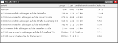

Navit
Dieser Artikel wurde für die folgenden Ubuntu-Versionen getestet:
Dieser Artikel ist mit keiner aktuell unterstützten Ubuntu-Version getestet! Bitte diesen Artikel testen und das getestet-Tag entsprechend anpassen.
Zum Verständnis dieses Artikels sind folgende Seiten hilfreich:
- Voraussetzungen
- Installation
- Konfiguration
- Grundeinstellungen
- Karten einbinden
- Ausgabe von Informationen während der Na...
- derzeitige Geschwindigkeit
- derzeitige Koordinate
- derzeitige Höhe über NN
- derzeitige Fahrtrichtung in Grad (0-36...
- Anzahl der verwendeten Satelliten
- derzeitiger Straßenname
- Entfernung zur nächsten Fahrtrichtungs...
- Anzeige der Fahrtrichtungsänderung
- Name der nächsten Straße
- voraussichtliche Ankunftszeit hh:mm
- verbleibende Kilometer bis zum Zielpun...
- verbleibende Zeit bis zur Ankunft hh:m...
- Profil des Fahrzeugs wählen
- Bedienung
- Sprachausgabe
- Update
- Schnellstart
- Deinstallation
- Links
Navit  ist eine Navigationssoftware, die mit unterschiedlichen Kartenformaten umgehen kann. Auch Karten aus dem OpenStreetMap Projekt können verwendet werden, müssen jedoch vor der Verwendung aufbereitet werden. Navit kommuniziert nicht direkt mit einem GPS-Empfänger, sondern über den Hintergrunddienst gpsd. Navit kann (je nach Kartenmaterial) die Routenplanung selbst übernehmen und ist Touchscreen-tauglich. Zusätzlich zum Straßennetz können sogenannte Points of Interest (POI) wie z.B. Denkmäler, Museen, Parks, etc., aus den Vektordaten angezeigt werden. Wie es sich für ein vollwertiges Navigationssystem gehört, können die Fahranweisungen als Sprachausgabe über Speech Dispatcher ausgegeben werden.
ist eine Navigationssoftware, die mit unterschiedlichen Kartenformaten umgehen kann. Auch Karten aus dem OpenStreetMap Projekt können verwendet werden, müssen jedoch vor der Verwendung aufbereitet werden. Navit kommuniziert nicht direkt mit einem GPS-Empfänger, sondern über den Hintergrunddienst gpsd. Navit kann (je nach Kartenmaterial) die Routenplanung selbst übernehmen und ist Touchscreen-tauglich. Zusätzlich zum Straßennetz können sogenannte Points of Interest (POI) wie z.B. Denkmäler, Museen, Parks, etc., aus den Vektordaten angezeigt werden. Wie es sich für ein vollwertiges Navigationssystem gehört, können die Fahranweisungen als Sprachausgabe über Speech Dispatcher ausgegeben werden.
Voraussetzungen¶
Für die Kommunikation mit dem GPS-Empfänger muss
der Dienst gpsd installiert und
ein unterstützter GPS Empfänger vorhanden sein
Installation¶
Navit ist in den offiziellen Paketquellen enthalten. Folgendes Paket muss installiert [1] werden:
navit (universe)
 mit apturl
mit apturl
Paketliste zum Kopieren:
sudo apt-get install navit
sudo aptitude install navit
Manuell¶
Um das Programm aus dem Quelltext kompilieren [2] zu können, sind folgende Pakete zu installieren:
build-essential
cmake
gettext
gpsd
gpsd-clients
libpng12-dev
libgtk2.0-dev
librsvg2-bin
libgps-dev
libdbus-glib-1-dev
freeglut3-dev
libxft-dev
libglib2.0-dev
libfreeimage-dev
zlib1g-dev
mit apturl
Paketliste zum Kopieren:
sudo apt-get install build-essential cmake gettext gpsd gpsd-clients libpng12-dev libgtk2.0-dev librsvg2-bin libgps-dev libdbus-glib-1-dev freeglut3-dev libxft-dev libglib2.0-dev libfreeimage-dev zlib1g-dev
sudo aptitude install build-essential cmake gettext gpsd gpsd-clients libpng12-dev libgtk2.0-dev librsvg2-bin libgps-dev libdbus-glib-1-dev freeglut3-dev libxft-dev libglib2.0-dev libfreeimage-dev zlib1g-dev
Der Quellcode steht via SVN über die Projektseite zur Verfügung (siehe Linux development ).
Konfiguration¶
Grundeinstellungen¶
Der Ordner, in dem das Kartenmaterial zu finden ist, kann in der aktuellen Version frei gewählt werden. Es empfiehlt sich jedoch, den Kartenordner unter /usr/share/navit/ anzulegen, da sich in dem Verzeichnis bereits die Symboldateien befinden. Davon ausgehend wird die Datei /etc/navit/navit.xml bearbeitet.
Der erste wichtige Parameter ist die Startposition. Hier müssen die Koordinaten an die eigenen Bedürfnisse angepasst werden. Helfen kann hier, neben der selbst ermittelten Position mit xgps, diese Webseite . Die ermittelten Werte sind als Grad und Minute einzutragen, z.B.
<navit center="5146 N 616 E" zoom="256" tracking="1" orientation="-1" recent_dest="10">
Um nun noch die Beispielkarte zu deaktivieren, in der Konfigurationsdatei den Wert enabled auf no ändern:
<mapset enabled="no">
<xi:include href="$NAVIT_SHAREDIR/maps/*.xml"/>
</mapset>Karten einbinden¶
OpenStreetMap Karten für Navit nutzen¶
Der einfachste, und auch vom Grundgedanken her sinnvollste, Weg zur Nutzung von Kartenmaterial ist das Einbinden von Kartenmaterial aus dem OpenStreetMap-Projekt. Es existiert bereits eine zum Herunterladen bereitgestellte Deutschland  Karte. Weitere Karten findet man im Navit Wiki
Karte. Weitere Karten findet man im Navit Wiki
Wer seinen eigenen Kartenausschnitte erstellen möchte, kann dieses mit dem Online-Werkzeug Navit-Planet-Extruction machen. Dazu muss im ersten Schritt der ungefähre Bereich sichtbar gemacht werden. Im zweiten Schritt schaltet man mit den Auswahlfunktionen rechts neben der Karte auf "select" um und markiert sich einen Bereich. Nach einem Klick auf "Get Map" wird der markierte Bereich als osm_bbox_xxxxxxxxx.bin heruntergeladen.
Anschließend muss noch die Datei in den Kartenordner verschoben werden und in der navit.xml bekanntgegeben werden.
<mapset enabled="yes">
<map type="binfile" enabled="yes" data="/usr/share/navit/maps/osm_bbox_xxxxxxxxx.bin" />
</mapset>Dabei ist zu beachten, dass immer nur ein mapset mit enabled ="yes" gesetzt werden darf. Alle anderen Kartensätze müssen bei enabled ="no" stehen.

Einbindung von Großer Reiseplaner (Marco Polo)¶
Um Karten aus dem Großen Reiseplaner nutzen zu können, ist die Datei data2.cab von der CD zu entpacken:
unshield x travel/data2.cab
Nun existiert ein Ordner namens DIRLAN_GER, in dem sich die einzelnen Karten befinden. Das Kartenmaterial für Deutschland ist in der Datei smp3.smp enthalten. Dieses Verzeichnis ist nach /usr/share/navit/maps zu kopieren und anschließend die Datei /etc/navit/navit.xml um folgende Zeilen zu erweitern (Rootrechte erforderlich):
<mapset enabled="yes">
<map type="mg" enabled="yes" data="/usr/share/navit/maps/dirlan_ger/dem.map" />
<map type="mg" enabled="yes" data="/usr/share/navit/maps/dirlan_ger/dem.map/smp3.smp" />
</mapset>Einbindung von Telefonbuch Map & Route (DeTeMedien)¶
Die Daten aus dem "Telefonbuch / Gelbe Seiten Deutschland Map & Route" können ebenfalls verwendet werden. Dazu ist die Datei karten.zip von der CD zu entpacken, die Karte in den Ordner /usr/share/navit/maps/ zu kopieren und die Datei /etc/navit/navit.xml um folgende Zeilen zu erweitern (Rootrechte erforderlich):
<mapset enabled="yes">
<map type="mg" enabled="yes" data="/usr/local/share/navit/maps/d7.map" />
<map type="mg" enabled="yes" data="/usr/local/share/navit/maps/d7.map/deu.smp" />
</mapset>Ausgabe von Informationen während der Navigation¶
Navit kann über die Anpassung innerhalb der navit.xml-Datei dazu veranlasst werden, zusätzliche Informationen auszugeben. Dazu sind nachfolgende Befehle in der Datei einzubinden.
derzeitige Geschwindigkeit¶
<osd enabled="yes" type="text" label="${vehicle.position_speed}" x="-200" y="0" />derzeitige Koordinate¶
<osd enabled="yes" type="text" label="${vehicle.position_coord_geo}" x="-200" y="0" />derzeitige Höhe über NN¶
<osd enabled="yes" type="text" label="${vehicle.position_height}m" x="-60" y="-80" />derzeitige Fahrtrichtung in Grad (0-360)¶
<osd enabled="yes" type="text" label="${vehicle.position_direction}" x="-60" y="-80" />Anzahl der verwendeten Satelliten¶
<osd enabled="yes" type="text" label="${vehicle.position_sats_used}/${vehicle.position_qual}" x="-50 "y="40" />Darüber hinaus sind im Navigationsbetrieb folgende zusätzliche Informationen verfügbar:
derzeitiger Straßenname¶
<osd enabled="yes" type="text" label="Currently on ${navigation.item.street_name_systematic}" x="0" y="0" />Entfernung zur nächsten Fahrtrichtungsänderung¶
<osd enabled="yes" type="text" label="${navigation.item[1].length[named]}" x="0" y="-105" />Anzeige der Fahrtrichtungsänderung¶
<osd enabled="yes" type="navigation_next_turn" x="325" y="-135" w="150" h="100" align="15" background_color="#a60c0f00" icon_src="$NAVIT_SHAREDIR/xpm/%s_wh_48_48.png" />
Name der nächsten Straße¶
<osd enabled="yes" type="text" label="Turn onto ${navigation.item[1].street_name_systematic}" x="0" y="-105" />voraussichtliche Ankunftszeit hh:mm¶
<osd enabled="yes" type="text" label="ETA ${navigation.item.destination_time[arrival]}" x="-150" y="-30" />verbleibende Kilometer bis zum Zielpunkt¶
<osd enabled="yes" type="text" label="DR ${navigation.item.destination_length[named]}" x="-85" y="-60" />verbleibende Zeit bis zur Ankunft hh:mm¶
<osd enabled="yes" type="text" label="TR ${navigation.item.destination_time[remaining]}" x="-85" y="-90" />Bei der Positionierung der Bildschirmausgabe ist zu beachten, dass positive x/y Werte von der oberen linken Bildschirmkante berechnet werden und negative von der unteren-rechten Bildschirmkante.
Profil des Fahrzeugs wählen¶
Um das Profil des Fahrzeugs, das standardmäßig benutzt wird, von Auto auf z.B. Fahrrad zu ändern, muss in der Zeile
<vehicle name="Local GPS" profilename="car" enabled="yes" active="1" source="gpsd://localhost" gpsd_query="w+xj">
car gegen bike ausgetauscht werden.
Die Zeile würde danach also so aussehen:
<vehicle name="Local GPS" profilename="bike" enabled="yes" active="1" source="gpsd://localhost" gpsd_query="w+xj">
Bedienung¶
Mausfunktionen¶
Die wichtigsten Bedienfunktionen sind:
 und ziehen: Karte bewegen
und ziehen: Karte bewegen : Kontextmenü
: Kontextmenü- -> "Punkt <Bezeichner> -> Als Lesezeichen aufnehmen"
Navigation¶
 Ist der GPS-Empfänger mit freier Sicht zum Himmel ausgerichtet und wird ein GPS-Signal über den GPS-Dienst an Navit weitergegeben, so wird die aktuelle Position auf der Karte dargestellt. Diese Position mit einem Rechtsklick als Startpunkt übernehmen. Nach einem Klick auf die Zielflagge kann mit einer Eingabeunterstützung das Ziel auf der Karte gesucht und mit einem Rechtsklick als Ziel markiert werden. Die Berechnung der Route startet nun automatisch, und die Navigation beginnt. Ein Klick auf die Straßenliste zeigt die detaillierte Ansicht mit der Länge des zu fahrenden Straßenabschnitts, der noch zu fahrenden Gesamtstrecke und der errechneten Fahrtzeit.
Sprachausgabe¶
In Verbindung mit einer Software zur Sprachausgabe wird Navit zu einem vollwertigen Navigationssystem. Zur Sprachausgabe stehen unterschiedliche Lösungen zur Verfügung:
Speech Dispatcher¶
Für die Sprachausgabe kann die Software Speech Dispatcher genutzt werden, die über das Paket
speech-dispatcher (universe)
mit apturl
Paketliste zum Kopieren:
sudo apt-get install speech-dispatcher
sudo aptitude install speech-dispatcher
aus den offiziellen Quellen installiert werden kann. Danach ist die Datei /etc/navit/navit.xml mit Root-Rechten zu öffnen [3] und die Zeile
<speech type="cmdline" data="echo 'Fix the speech tag in navit.xml to let navit say:' '%s'" />
zu ändern in
<speech type="cmdline" data="spd-say -l de '%s'" />
Nach einem Neustart des Rechners werden die Routenhinweise in deutscher Sprache ausgegeben.
Hinweis:
Es existiert ein offener Bug zum Speech Dispatcher. Ändert man die in der Datei /etc/default/speech-dispatcher den Wert RUN_SPEECHD auf yes, so startet der Speech-Dispatcher-Daemon beim nächsten Systemstart mit, blockiert jedoch das Tonausgabegerät für alle anderen Zugriffe.
eSpeak¶
Um den Bug in spd-say zu umgehen, können die Anweisungen auch über espeak ausgegeben werden. Espeak ist bereits installiert, falls nicht kann das Paket aus den Quellen nachinstalliert werden [1]. Um espeak in Navit zu nutzen, muss die Datei /etc/navit/navit.xml mit Rootrechten geöffnet werden [3] und die Zeile
<speech type="cmdline" data="echo 'Fix the speech tag in navit.xml to let navit say:' '%s'" />
in
<speech type="cmdline" data="espeak -v de '%s'" />
geändert werden.
Update¶
Vor einer Programm-Aktualisierung ist es sinnvoll, die Datei /etc/navit/navit.xml zu sichern, da diese in den aktuellen Versionen überschrieben wird.
Schnellstart¶
Um den GPS-Dienst und Navit nicht separat starten zu müssen, kann man sich einen Starter anlegen. Dazu diesen Inhalt in einer Datei hinterlegen:
1 2 3 | #!/bin/sh
gpsd /dev/ttyUSB0
navit
|
Der Pfad zur GPS-Hardware ist anzupassen. Dann die Datei ausführbar machen und bei Bedarf starten.
Deinstallation¶
Bei einer Paketinstallation aus den Quellen genügt eine Deinstallation von Navit. Wer die Entwicklerversion kompiliert hat, braucht lediglich den Ordner zu löschen.
Links¶
navit-project.org
- ProjektseiteNavit mit Sprachausgabe
 - YouTube-Video
- YouTube-VideoOpenStreetMap - Eine frei verfügbare, digitale Landkarte
OpenStreetMap Karten Server
 - dieser stellt auch Karten einzelnen Bundesländer Deutschlands zur Verfügung
- dieser stellt auch Karten einzelnen Bundesländer Deutschlands zur Verfügung
- Erstellt mit Inyoka
-
 2004 – 2017 ubuntuusers.de • Einige Rechte vorbehalten
2004 – 2017 ubuntuusers.de • Einige Rechte vorbehalten
Lizenz • Kontakt • Datenschutz • Impressum • Serverstatus -
Serverhousing gespendet von